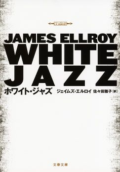
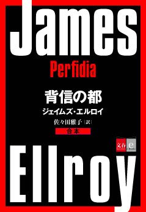

| 暗黒小説へようこそ ミステリーのプロが解説する、ジェイムズ・エルロイの世界【文春e-Books】 | |
| Unknown | |
※読む際のご注意、お断り等については こちら をお読み下さい。
Bad white men doing bad things.
- James Ellroy
はじめに
ジェイムズ・エルロイの十四番目の長編小説Perfidia（Knopf, 2014）が、『背信の都』として日本で刊行されることになりました。『ビッグ・ノーウェア』や『ＬＡコンフィデンシャル』といった傑作によって現代警察小説のジャンルを切り拓いたエルロイが、一九九二年の『ホワイト・ジャズ』（邦訳は一九九六年）以来、二十数年ぶりに警察小説にカムバックした記念すべき作品です。
そして『背信の都』は、エルロイが新たに開始する警察小説四部作《新・暗黒のＬＡ四部作》の第一作でもあります。一九四七年から一九五九年までのロサンジェルスを舞台とした《暗黒のＬＡ四部作》からさらに時代をさかのぼり、一九四一年、日本とアメリカが真珠湾攻撃によって戦争状態に陥った日に幕は開かれます。名作『ブラック・ダリア』以来、ジェイムズ・エルロイはアメリカ社会の悪と正義をひとつのクロニクルとして描いてきました。そのなかでもっとも過去の時代を扱う『背信の都』は、つまり、エルロイが描いてきた壮大な悪の叙事詩の源流にあたる作品だということです。
同作の刊行とともに、これまで手に入りづらくなっていた《暗黒のＬＡ四部作》の各作品──『ブラック・ダリア』『ビッグ・ノーウェア』『ＬＡコンフィデンシャル』『ホワイト・ジャズ』──がいっせいに電子書籍化されました。この無料の電子書籍は、『背信の都』と《暗黒のＬＡ四部作》を中心に、現代ミステリー界で最重要の作家ジェイムズ・エルロイの全貌をご紹介するものです。ネタバレには充分留意してあります。これを機に、《アメリカ文学界の狂犬》と異名をとるエルロイの唯一無二の小説世界に足を踏み入れていただければと願っています。
１ パーフィディア
最新作『背信の都』の原題となっている「Perfidia」という言葉に馴染みのある方は少ないのではないか。「裏切り」といったような意味を持つこの言葉は、グレン・ミラーらの録音もあるジャズのスタンダード曲のタイトルからとられたものだ。『背信の都』のあちこちで、《パーフィディア》の調べが奏でられ、主人公たちの心象に重ねられている。
前作『アンダーワールドＵＳＡ』で、ジェイムズ・エルロイはアメリカの政治と暗殺のクロニクル《アンダーワールドＵＳＡ三部作》の幕を閉じた。ジョン・Ｆ・ケネディ大統領暗殺にはじまり、ロバート・ケネディ元司法長官とマーティン・ルーサー・キング牧師の暗殺、リチャード・ニクソンの登場とアメリカの中米への干渉──ヴェトナム戦争を機に没落してゆく白人の支配体制のあがきを、白熱のノワールとして、悪の全体小説として、エルロイは描き切った。
それから五年のブランクを置いて発表したのが『背信の都』である。
物語は一九四一年十二月六日にはじまる。ロサンジェルス市警の鑑識官を務める日系二世のヒデオ・アシダは、頻繁に強盗に襲われるドラッグストアを監視するため、手製の自動写真撮影機を設置していた。アシダは科学と工学に秀でた怜悧な青年である。
惨劇が起きたのはその夜のことだ──日系人農園主リョーシ・ワタナベの一家四人が血まみれの部屋で発見された。一報を受けて現場に急行したのはロサンジェルス市警察本部のダドリー・スミス巡査部長。腹部を裂かれた死体はまるで日本の切腹のようであり、壁には日本語で書かれた遺書らしきものが残されていた。日系人であるアシダを呼びだし、ダドリーはその文字を解読させる。
いま迫り来る災厄は／われらの招きたるものに非ず／われらは善き市民であり／かかる事態を知る身に非ざれば──そう書かれていた。「迫り来る災厄」とはいったい何なのか？
無理心中とするには不可解な点がいくつもある現場を離れた翌朝、十二月七日。アメリカ全土を揺るがすニュースが届いた──日本軍が真珠湾を奇襲したのだ！ ついに日米は戦争状態に突入し、ロサンジェルスを不安と怒りが覆う。ひとびとは軍に志願するために列を成し、日系人へのヘイトが燃え上がり、彼らは財産を没収され、捕らえられてゆく。
そんななかで「ジャップ」の殺しを解決する必要があるのか？ ＬＡ市警とＬＡ市の大物たちは、この事件をきちんと扱うことで自身の正当性を示そうと決めた。しかし真犯人を捕らえる必要はない。ちょうどいい変態なりジャップなりに罪を着せればいいではないか。その意を受けて、ダドリー・スミスが動きはじめる。
一方、ヒデオ・アシダは収集した証拠をもとに独自の捜査をつづける。「迫り来る災厄」とは真珠湾攻撃のことではないのか。殺されたワタナベはスパイだったのではないか。しかし日系人収容の網はアシダにも迫り、徐々に彼を追いつめてゆく......
アシダの決死の捜査。それを妨害し、ときに利用する悪徳刑事ダドリー・スミス。この二人を軸にしつつ、ジェイムズ・エルロイはさらに二人の人物の視点を加える。《暗黒のＬＡ四部作》でもしばしば名前の挙がっていた、のちのロサンジェルス市警本部長で実在の警察官ウィリアム・パーカーと、『ブラック・ダリア』に登場した女ケイ・レイクである。それぞれに自身の信じる「正義」を貫こうとする彼らの行動が描く線は、しかし、複雑怪奇な策謀でさまざまに屈折する。ロサンジェルスに「第五列＝スパイ」が潜んでいるのではという疑心暗鬼も高まり、戦争に乗じて儲けようとする者たちも陰謀を企む。政治と欲望と暴力の衝動が織りなす壮大なタペストリーを編むエルロイの筆は健在であり、むしろ力感は増している感さえある。
三人の男たちの物語にひとりの女性の手記をはさみこむ手法は、前作『アンダーワールドＵＳＡ』を踏襲したものだ。男性主人公の犯罪小説を書きつつも、そうした物語にありがちな男性優位主義に陥らないのがエルロイのひとつの特徴だが、女性視点をひとつ入れることで、そうした側面がさらに深みを増している。悪徳の交響曲のごとき『背信の都』で最後の重要な調べを奏でる役割も、女性に与えられているのだ。
セクシズムだけではない。『背信の都』には日本人を意味する差別語「ジャップ」や、中国人を差別する語「チンク」といった言葉が乱れ飛ぶ（どころか第一部、第二部のタイトルにまでなっている）が、これは真珠湾攻撃直後にＬＡを覆うヘイトを描いているだけで、エルロイ自身がレイシストでないことはヒデオ・アシダの扱いを見るだけでわかるはずだ。肌の色が何であろうと、あるいは性別や宗教がどうであろうと、悪いやつは悪いことをする。悪いやつがいいことをすることもある。それがエルロイの人間観であり、それはレイシズムからもセクシズムからも遠く離れたものだ。
さきほど、ダドリー・スミス、ウィリアム・パーカー、ケイ・レイクといった登場人物を挙げたが、『背信の都』には過去のエルロイ作品に登場した人物が多数登場する。ヒデオ・アシダも『ブラック・ダリア』の序盤で（名前だけだが）語られていた。くわしくは巻末のエルロイ自身による「登場人物名鑑」をご覧いただきたいが、登場するのは《暗黒のＬＡ四部作》の人物だけでなく、《アンダーワールドＵＳＡ三部作》のキャラクターも重要な役割を担っている。最終的に『ブラック・ダリア』の直前で閉幕するという《新・暗黒のＬＡ四部作》は、つまり、《ＬＡ四部作》と《ＵＳＡ三部作》を統合し、一九四一年から一九七二年に至るエルロイ世界のクロニクルを完成させる壮大なプロジェクトなのだ。
２ エルロイと警察小説
警察小説は、いま日本のミステリー界でもっとも熱いジャンルだろう。そして、そんな現代型の警察小説を確立した作家のひとりがエルロイだった。『64 （ロクヨン）』の横山秀夫氏も、「ミステリマガジン」二〇一三年一月号のインタビューで、エルロイ作品からの影響を認めている。
そもそも警察小説は、神のごとき名探偵による「怪奇な謎と論理的解決」を描くものとして誕生したミステリーにリアリズムを導入することで生まれた。嚆矢となるのはイギリスのＦ・Ｗ・クロフツのデビュー作『樽』（一九二〇年）。この作品を皮切りにクロフツが「足で稼ぐ捜査で真相を掘り当てる等身大の刑事たち」を主人公としたミステリーをつぎつぎに発表していったのは、アガサ・クリスティーらが活躍した「本格ミステリーの黄金時代」と重なるから、警察小説の歴史は思いのほか長く、ミステリーの正統のひとつと言えそうだ。『スターヴェルの悲劇』『フレンチ警部と紫色の鎌』など、名探偵の推理がない代わりに意外性に満ちたプロットを持つクロフツの警察小説は、現在の眼でみても楽しめる傑作が多い。
警察小説の分野で、クロフツの次に飛躍が訪れたのは一九五〇年代のこと。今度の変革はアメリカから訪れた。『失踪当時の服装は』（一九五二年）にはじまるヒラリー・ウォーの一連の警察小説と、『警官嫌い』（一九五六年）で開幕して五十年近く書き続けられたエド・マクベインの《87 分署シリーズ》である。
ウォーは、平凡な市民である刑事たちが平凡な市民の行なう犯罪に迫ってゆくさまをリアリスティックに描き出し、『事件当夜は雨』などで、ごくふつうの市民の中に蠢く暗いものを剔抉してみせた。一方マクベインは、それぞれに個性的な刑事たちにスポットライトを次々に当ててゆきながら、いわば「警察署」を主役とした物語を生み出した。
そんなマクベインとウォーの試みをひとつに融合させた重要人物が、スウェーデンのコンビ作家、マイ・シューヴァル＆ ペール・ヴァールーである。北欧ミステリーの先駆者でもあるこのコンビ作家は、87 分署シリーズのように個性的な刑事たちを多数登場させ（中にはシリーズ途中で殺害される者もいる）、ウォーのような社会科学的なリアリズムを導入した。ウォー作品ではあくまで小さな町のレベルにとどまっていた視野も大きく広がり、シューヴァル＆ ヴァールーの《マルティン・ベック・シリーズ》は、当時のスウェーデンという国家の問題を問う警察小説となった。シリーズは一九六五年の第一作『ロセアンナ』から一九七五年の『テロリスト』まで十作が書かれた。
そしてジェイムズ・エルロイが登場する。
エルロイの最初の警察小説は、第二長編『秘密捜査』（一九八二年）。一九五一年のロサンジェルスを舞台とした同作は、エルロイの強迫観念となっているある殺人事件に材をとった作品だった。エルロイの母親、ジニーヴァ・ヒリカー・エルロイ殺害事件である。
広く知られたことだが、エルロイは十歳のときに母ジニーヴァを何者かに殺害されている。赤毛の美しい女だったジニーヴァは、働きながら息子ジェイムズ・エルロイを育てていた。ところが一九五八年六月二十二日、ＬＡに住む父親（エルロイの両親は離婚していた）のもとで週末をすごしたエルロイが帰宅すると、そこには何人もの刑事たちがおり、母の死を告げられたのである。
ジニーヴァは恋多き美女であり、殺害された夜も「浅黒い肌の男」とすごしているのが目撃されていた。その後、二人の足跡は不明となり、翌朝ジニーヴァは細い紐で絞殺された姿で発見された。
この事件がエルロイという作家の核心となる。やがて父親のもとに引き取られたエルロイは、犯罪実話に夢中になる。とくに愛好したのが、当時のテレビドラマ《ドラグネット》で主人公の刑事を演じた俳優ジャック・ウェッブ（『背信の都』にも登場する）の著書The Badgeだった。ＬＡでの凶悪事件を紹介した本で、そこに収録されていた事件のひとつが、一九四七年一月に起きた猟奇殺人事件「ブラック・ダリア事件」だったのである。
幼いエルロイは夜ごとの夢のなかで、殺される瀬戸際にある〝ブラック・ダリア〟ことエリザベス・ショート（彼女も『背信の都』に意外な役回りで登場している）を自分が救い出す妄想を紡いでいたと、自伝『わが母なる暗黒』にある。誰に殺されたのかもわからない母ジニーヴァとエリザベス・ショート。この二人がエルロイの妄想の中でオーバーラップしていただろうことは想像に難くない。
エルロイ初の警察小説『秘密捜査』は、エルロイの母親にそっくりなバックグラウンドを持つ赤毛の女が殺害された事件を追うものだ。被害者の幼い息子も登場する。妙に大柄だというその少年の描写は、まさしくエルロイそのものである。『秘密捜査』には《暗黒のＬＡ四部作》にも『背信の都』にも登場するロサンジェルス市警の刑事ダドリー・スミスやマイク・ブルーニング、ディック・カーライルも登場しており、いろいろな意味でエルロイの原点と言っていい。
つづく第三長編『血まみれの月』も警察小説。舞台は現在で、ロサンジェルス市警の刑事ロイド・ホプキンズを主人公とした同作は、『ホプキンズの夜』『自殺の丘』の二作の続編が書かれた。エルロイらしい壮絶な闇を抱えた刑事ホプキンズの造型は出色で、とくに『血まみれの月』は、連続殺人鬼と刑事とを同じようなトラウマで結びつけることで、ありふれたサイコ・サスペンスの枠を超えた傑作となっている。第三作『自殺の丘』では、権力欲とヘイトにとり憑かれたホプキンズの上司の肖像を深く彫琢し、警察内部の歪んだ権力のありようを捉えている。
しかし、エルロイが現代警察小説の地平を切り拓くのは、『ブラック・ダリア』で開始された《暗黒のＬＡ四部作》まで待たねばならない。
《ホプキンズ部長刑事シリーズ》を終えたエルロイは単発のシリアル・キラー小説『キラー・オン・ザ・ロード』を書く。ここまでの六つの長編小説は、日本でいう文庫書き下ろしにあたるペーパーバック・オリジナルで刊行されていた。初のハードカヴァー作品が第七長編、『ブラック・ダリア』である。
エルロイはこの作品を母に捧げ、『秘密捜査』の変奏を試みる。
女優になることを夢見てハリウッドにやってきた田舎の娘、エリザベス・ショート。漆黒の髪を華麗に結い、黒ずくめの服装をしていたことから〝ブラック・ダリア〟と異名をとっていたエリザベスは、一九四七年一月、上半身と下半身を分断され、口を耳まで切り裂かれた姿で発見された。これは現実に起きた猟奇殺人であり、エルロイは初のハードカヴァー作品という大きなチャンスに臨んで、この事件──幼い頃からのオブセッションであり母の死の陰画でもある未解決事件──の「解決」に挑んだわけである。『ブラック・ダリア』は『秘密捜査』の変奏だと言ったのは、この二作の構成がそっくりだからで、いわばエルロイは、作家として上達したスキルで、再び「ジニーヴァ・エルロイの死」を描いたのである。この作品が、一九四〇年代から一九五〇年代までのロサンジェルス市警を描くクロニクル《暗黒のＬＡ四部作》（英語ではL.A. Quartet）の第一作となる。
四部作第二弾『ビッグ・ノーウェア』と第三弾『ＬＡコンフィデンシャル』で、エルロイ流の警察小説は完成をみる。この二作でエルロイは、ＬＡ市警内の陰謀や、白人による非白人へのヘイトや弾圧といった権力の悪を、刑事たちの物語として描いた。警察小説を「刑事たちが事件を解決するだけのミステリー」から解放したといえばいいだろうか。
エルロイ自身は、自分流の警察小説の原点として、ジョゼフ・ウォンボーと、ジョン・グレゴリー・ダンの『エンジェルズ・シティ』をしばしば挙げている。面白いのはこの二人のどちらも、ミステリーの文脈で警察小説を書いた作家ではない点だろう。
ウォンボーはほぼ一貫してロサンジェルスの警官の物語を描いている。しかしミステリーらしく何かの事件を解決するストーリーを軸にするのではなく、さまざまな警官たちの群像劇のような趣で、彼らの粗野な日常と言語をモザイクのように組み合わせて作品を構成する。謎解きを期待すると肩すかしを食うだろうが、『クワイヤボーイズ』や『センチュリアン』など、その重層的で狂騒的で一種コミカルな小説世界は非常に独自のものだ。
そんなウォンボー的な手法は、『ビッグ・ノーウェア』以降の作品の基本線となっている。『ブラック・ダリア』の第一部や、あるいは『ＬＡコンフィデンシャル』冒頭の「血のクリスマス」の場面などにはウォンボー的な手つきが見てとれる。
ジョン・グレゴリー・ダンの大作『エンジェルズ・シティ』も、ロサンジェルスの刑事の物語である。モチーフとなっているのは、他ならぬブラック・ダリア事件。刑事と聖職者の兄弟を主人公に、この二人の視点からロサンジェルスの政治と倫理と犯罪が描かれている。人間の魂の上半身と下半身を通じて、ＬＡの悪徳と政治を複眼的に捉えた小説といえばいいだろうか。
こうした『エンジェルズ・シティ』の佇まいは、まさに『ブラック・ダリア』以降のエルロイの核心部分と通じ合う。とくに最新作『背信の都』では、カトリック系のアイルランド人である悪徳刑事ダドリー・スミスとカトリックの大司教との関係を通じて、宗教の問題が存在感を増している。
犯罪を捜査する役割だけではなく、警察組織の政治力学や腐敗と無縁ではいられない組織人としての警察官。それをエルロイはウォンボーやダンといった「非ミステリー的な警察小説」の書き手にインスパイアされて描いた。こうして警察小説の新たな地平を拓いたエルロイが、『ホワイト・ジャズ』から二十年以上を経て、生まれ故郷のロサンジェルスと、古巣である警察小説に帰ってきたのである。
それが『背信の都』なのだ。
３ 二人の赤毛の女
『背信の都』では、主人公のひとりウィリアム・パーカーが執着するジョーンという名の赤毛の女性についてしばしば語られる。パーカーと同郷だというジョーンを写した写真は、こんなふうに描写されている。
「ジョーンは丸太に横木を渡した柵に腰掛けていた。格子縞のシャツ、膝までのブーツ、乗馬ズボンという格好で。髪を真ん中で分けて縛っていた。厳しく、はっとするほど冷ややかな美しさを発散していた」
この写真に見覚えのある方はいないだろうか。熱心なエルロイ・ファンなら、この写真をきっと見たことがあるはずなのだ。
これと同じ写真が、エルロイの自伝『わが母なる暗黒』のカヴァーに載っている。エルロイの母、ジニーヴァ・ヒリカー・エルロイを写した写真だ。右の描写そのままの母の写真を、エルロイはウィリアム・パーカーに手渡した。パーカーが追う「赤毛のジョーン」は、ジニーヴァなのである。
エルロイにとって、犯罪小説を書くことは母ジニーヴァの死の謎を解くことだ。『秘密捜査』がそうであり、『ブラック・ダリア』がそうだった。そして『背信の都』でみたび、ジニーヴァが登場した。
現時点では、ウィリアム・パーカーにとってジョーンがどういう意味をもつのか、まだ謎が残されている。『背信の都』でのパーカーは、アルコール依存症を克服しようという苦闘のさなかにあり、エルロイもまた、アルコールやドラッグの依存症に苦しんだ経験を持つ。禁断症状に苦しむ病床で狂気に陥りかけたエルロイを支えたのは「作家になる」という一念だったと自伝に記されていた。そこに、正しい警官であろうとするパーカーの執念を重ねることもできそうだ。パーカー＝エルロイ／ジョーン＝ジニーヴァの構図。この二重写しは、新たにはじめられた《新・暗黒のＬＡ四部作》もまた、自身を捕らえて離さない「母の死」を理解しようとするエルロイの試みなのだと告げている。

『背信の都』は、ジェイムズ・エルロイが新たに手がけるプロジェクト《新・暗黒のＬＡ四部作》（英語ではThe Second L.A. Quartet）の第一作である。エルロイはこの四部作で、『ブラック・ダリア』以降のすべての作品をひとつの「エルロイ世界」に統合しようとしていることはすでに述べた。
長いキャリアのある作家の最新作ではあるが、『背信の都』は、これまでエルロイ作品に触れたことのない読者にとって恰好の入り口となる。この作品は「エルロイ世界」の時系列の最初に位置する物語だからである。すべてはここからはじまるのだ。
この作品を読み終えたのちに《暗黒のＬＡ四部作》や《アンダーワールドＵＳＡ三部作》を読めば、あなたは『背信の都』に登場した人物に再会することになる。若かった彼らや彼女らが、どう歳を重ね、どう人生を全うし、あるいはどんな死を迎えるのか。それを目の当たりにすることになるのだ。
ここでは《新・暗黒のＬＡ四部作》に先立つ《暗黒のＬＡ四部作》について、その内容と魅力を簡単にご紹介したい。
１ 『ブラック・ダリア』
ジェイムズ・エルロイの初ハードカヴァー作品にして《暗黒のＬＡ四部作》第一作。名実ともにエルロイの出世作であり、日本では一九九〇年に刊行され、同年末の『このミステリーがすごい！』で海外編の第三位に選ばれた。二〇〇六年にはブライアン・デ・パルマ監督で映画化されている。
この作品の冒頭には、母への献辞がおかれている。
母ジニーヴァ・ヒリカー・エルロイ（一九一五‐ 一九五八）に。
二十九年後のいま
この血塗られた書を告別の辞として捧げる
そんな血を吐くような言葉を受けて、この小説は、「私は生前の彼女を知らない」という印象的な一文ではじめられる。
一人称「私」で語るのはＬＡ市警の若い警察官バッキー・ブライチャート。バッキーは、同じくボクシングの選手という過去を持つ先輩刑事リー・ブランチャードと懇意になる。対照的なボクシング・スタイルに由来して、二人は〝ファイア・アンド・アイス〟と呼ばれるようになった。リーは以前に解決した銀行強盗事件を機に知り合ったケイ・レイクという美女と同棲しており、バッキーは彼女に徐々に惹かれはじめる。
警察官同士のパートナーシップと、ファム・ファタルを頂点とする三角関係を重ねた複雑な構図。これを背景にしてバッキーとリーの日常が第一部で綿密に語られたのちに、事件が起きる──ブラック・ダリア事件である。
映画女優志願の娘、エリザベス・ショート。その姿から〝黒いダリア〟と呼ばれていた娘が惨殺死体で発見された。死体は腰のところで切断されており、唇の両端は耳まで切り裂かれ、まるで笑っているかのように見えた。死体のあちこちには傷が残り、太腿や下腹部からは肉片が切り取られていて、被害者は殺害される前に拷問されていたのではないかと思われた。バッキーとリーはこの惨殺事件の捜査を開始する。リーは事件に異常にのめりこみ、ケイとの関係にも不協和音が響きはじめる。そしてある日、リーは姿を消す......。
エルロイ作品中、もっとも濃密な筆致で描かれた作品である。一種、文学的な風格すら感じさせる描写と筋運びで、とくに序盤は重たすぎて読みにくいと思う方もいるかもしれない。初のハードカヴァーということでエルロイも大いに気負って書いたのだろう。この筆致は『秘密捜査』にも通じる。
《暗黒のＬＡ四部作》の残る三作と『ブラック・ダリア』は、登場人物が幾人か重なることを除いて、内容につながりはない。警察の腐敗の問題もあまり語られないし、「悪い白人」のテーマも見出しにくい。代わりに、事件の真相が名家の陰惨な秘密につながっていくあたりは、かつてホームレス時代にエルロイが読み漁ったというアメリカのハードボイルド作家ロス・マクドナルドの諸作──とくに『ウィチャリー家の女』や『さむけ』──を思い起こさせる。エルロイは正統的なハードボイルド小説をほとんど書かなかったが、この『ブラック・ダリア』とデビュー作『レクイエム』は、エルロイ式のハードボイルド・ミステリーだと言えるかもしれない。
なお、『ブラック・ダリア』が謎解きミステリーとして出色の出来であることも付記しておきたい。意外な犯人、ダリアの死体損壊の意外な動機など、細かな伏線が最後にきっちり回収され、じつは驚くほど端正な造りであったことがわかるのである。
現在につながる「巨匠ジェイムズ・エルロイ」が姿をあらわすのは、次の『ビッグ・ノーウェア』でのこと。これに先立つ『ブラック・ダリア』は、それまで「ペーパーバック」とか「ミステリー」といったジャンルの約束事に則った書き方をしていたエルロイが、それを脱却するためのけじめの作品だった。より大きな何かを描くために、ここまでのすべてを清算した重要なステップ、いわば大いなる習作が、『ブラック・ダリア』だったのではないか。
２『ビッグ・ノーウェア』
自身の作品のテーマについて尋ねられたとき、ジェイムズ・エルロイが繰り返し口にする言葉がある。
Bad white men doing bad things.
悪いことをする悪い白人ども、とでも訳せばいいだろうか。権力を握る白人による、アフリカ系やユダヤ系、あるいは日系人といった非アングロサクソンの弾圧。それをロサンジェルスの警察権力の側から描いたのが新旧の《暗黒のＬＡ四部作》であり、それをＦＢＩやＣＩＡといった連邦政府の側から描いたのが《アンダーワールドＵＳＡ三部作》だった。
しかし『ブラック・ダリア』までの作品には、「Bad white men」の影は稀薄だ。それが作品全体を貫くテーマとなり、「Big bad white man」とでもいうべきキャラクターが登場した最初の作品が、《暗黒のＬＡ四部作》第二弾『ビッグ・ノーウェア』だった。この作品は三人称で語られていて、エルロイお得意の主人公三人の章を繰り返すスタイルがはじめて導入された作品である。この「主人公トリオ」のスタイルは、以降、『ホワイト・ジャズ』を除くすべての長編小説で使われている。つまり、現在に連なる「第二期ジェイムズ・エルロイ」のスタートは、この『ビッグ・ノーウェア』なのであり、「ロサンジェルスを舞台とした悪い白人警官のクロニクル」が開始されたのも『ビッグ・ノーウェア』だったのだ。
エルロイという作家の真価を知るには、この『ビッグ・ノーウェア』を体験するのが一番てっとり早いだろう。
物語の幕開けは『ブラック・ダリア』から三年後の一九五〇年一月一日未明。若き保安官補ダニー・アップショーのもとに、言語に絶する惨殺死体発見の報が届く。死体は性倒錯を思わせる手口で無残に損壊されていた。一方、ソビエトとの冷戦を受けて国内の共産主義者の摘発──いわゆる「アカ狩り」──が進行するなか、ハリウッドの労働組合への共産主義の浸透を捜査するＬＡ市警とＦＢＩの共同作戦が開始される。
これに加わることになったのが欧州でナチと戦った経験を持つ刑事マルコム・コンシディーン。さらに映画業界にも関わる実業家ハワード・ヒューズの命令でこの作戦に加わるのが、元ＬＡ市警の悪徳警官バズ・ミークス。この二人と元旦の殺人を追うアップショーの三人が、本作の主人公である。
やがてアップショーは、市警の名物刑事ダドリー・スミスにスカウトされて共産主義者摘発班に組み込まれ、〝アカの女王〟の異名を持つ共産主義活動家クレア・ドゥ・ヘイヴンのもとに潜入捜査をすることになる。ドゥ・ヘイヴンらは一九四二年に起きた殺人事件《スリーピー・ラグーン事件》が冤罪であったとする運動を行なっていた。
こうして物語は元日の異常殺人と、《スリーピー・ラグーン事件》の真相、共産主義者への捜査と弾圧の三つの軸に沿って進んでいく。この三つをつなぐ因果関係と、そこに横たわる悪辣な陰謀は強烈なものだ。
『ブラック・ダリア』以上に複雑緻密なプロットと、ミステリーとしての意外な真相がここにあるのはもちろん、それを彩る熱病じみた情念がすさまじい。『血まみれの月』などにあったエルロイ独特の「熱」が、さらにスケールアップしたかたちで爆発するのが『ビッグ・ノーウェア』なのだ。ことに、第二部ラストで起きるある出来事は読む者を驚愕させること請け合いである。
エルロイの小説のなかで、これぞエルロイ、というものをひとつ挙げろと言われたら、『ビッグ・ノーウェア』を挙げるひとも多いのではないだろうか。《暗黒のＬＡ四部作》の影の主役であり、『背信の都』でついにその内面が描かれることになった名物刑事ダドリー・スミスの初登場作なので《エルロイ・クロニクル》を考えるうえで看過できないし、『背信の都』で重要なカギを握る人物の多くが『ビッグ・ノーウェア』の登場人物であるということを考えても、この作品を読み逃すべきではないだろう。
３ 『ＬＡコンフィデンシャル』
エルロイの「代表作」に挙げられることが多いのが、《暗黒のＬＡ四部作》第三弾たるこの作品である。カーティス・ハンソン監督により一九九七年に公開された映画《L.A.コンフィデンシャル》も傑作の誉れ高く、それゆえ知名度が高いせいもあるが、原作の出来も素晴らしい。四部作中もっともスケールが大きく、エルロイの作品では珍しくラストシーンが爽快で感動的であることも見逃せない。長大で複雑な作品ではあるが、エンタメ度ではエルロイ史上最高の作品なのである。
前作で開発した「三人の主人公システム」を踏襲した『ＬＡコンフィデンシャル』は、この三人のキャラ立ちが良く、エンタメとしての読みやすさはそのせいでもあるだろう（映画版でも、この三人を個性的な三人の俳優が見事に演じていた）。
ひとりはバド・ホワイト──幼少期に母が父親に殴り殺されるところを目撃し、以来、女性への暴力を憎悪している暗い熱を抱えた刑事。ひとりはジャック・ヴィンセンズ──ハリウッドに出入りする社交的な刑事で、一方でスキャンダル雑誌に醜聞を売り込んでいる。もうひとりはエド・エクスリー──ＬＡ市警の名刑事を父に持ち、将来を嘱望される若き刑事だが、太平洋戦争中に日米両軍が全滅した場に居合わせ、あたかも自分が敵を殲滅したかのように装って「戦争の英雄」に祭り上げられた。それが彼の悔恨である。
中心となる事件は、一九五三年四月の深夜に発生した大量殺人《ナイト・アウルの虐殺》。深夜営業のカフェ《ナイト・アウル》が何者かに襲撃され、ギャングの構成員を含む男女六名が射殺されたのである。事件前後には紫色の車に乗った黒人数名の姿が目撃されており、ほどなく犯人グループは警察に急襲され、エクスリーらに全員射殺された。
物語のタイムスパンはじつに八年間に及ぶ。三人の刑事たちは部署を異動し、ときに左遷され、昇進し、それぞれの居場所でさまざまな事件に取り組む。ハリウッド女優そっくりの娼婦を集めた娼館。過去のバラバラ殺人を思わせるポルノ雑誌。アニメ王が起ち上げようとする大テーマパーク。『ビッグ・ノーウェア』ラストで奪われた大量の麻薬。そしてロサンジェルスへ進出しようとするギャング組織......
エルロイの作品中、もっとも複雑なプロットを持つ作品である。しかし、主人公三人のキャラがよく立っているから、それぞれの物語を追っていけば混乱することはない。『ビッグ・ノーウェア』もそうだったが、前半は主人公たちの妄執をめぐるモザイク状の警察小説として読めばよく、後半に入るや、これらのモザイクがパズルのピースとなってひとつに収束してゆくスリルを味わえる。
『ＬＡコンフィデンシャル』終盤で、それまで独自に動いてきた三人が一堂に会して共闘を決意し、各自のつかんだ情報を持ち寄るシーンが素晴らしい。すべてのピースが巨大な策謀の絵図を描き出す衝撃。まるで名探偵による解決場面のようであり、そこから一気に驀進を開始するクライマックスも壮絶である。修羅場をくぐり抜けて末尾におかれる終章は、恩讐をくぐり抜け、生死をかけた対決に臨んだ男たちの友情を描き出した名場面だ。
なお、映画版でも原作でもストーリーテリングのひとつの鍵になっているスキャンダル誌《ハッシュ‐ ハッシュ》の編集長シド・ハジェンズは『背信の都』にも登場、同誌立ち上げ以前の姿をみることができるし、エド・エクスリーの父でＬＡ市警から実業家に転身したプレストン・エクスリーも、『背信の都』で暗躍している。


４ 『ホワイト・ジャズ』
《暗黒のＬＡ四部作》は、この『ホワイト・ジャズ』で完結する。エルロイ作品中でも人気と評価がひときわ高い傑作である。邦訳が刊行された一九九六年末の『このミステリーがすごい！』でも海外編第二位になっている。
『ビッグ・ノーウェア』『ＬＡコンフィデンシャル』と続いた三人称文体を離れ、今回は主人公の一人称が採用されているが、この文体がとにかく破格。ふつうの一貫した文章ではなく、言葉の断片を「／」「──」「＝」といった記号で接続してゆくことで主人公の意識の流れを描き出すとでもいえばいいだろうか。ビートの利いた音楽にも似た異形の文体であり、これは馳星周や冲方丁といった日本人作家にも影響を及ぼしており、そういう意味でも『ホワイト・ジャズ』は非常に重要な作品だ。
語り手はＬＡ市警風紀班のデイヴィッド・クライン警部補。ギャングの大物とずぶずぶの関係にあるクラインは、犯罪組織の依頼でギャングがらみの捜査の証人を抹殺する仕事をすることすらある悪徳刑事である。
物語の端緒となるのは、ＬＡ市警と長年にわたる癒着関係にある大物麻薬密売人カフェスジアンの自宅が何者かに侵入され、家具などがひどく破壊された事件である。カフェスジアンと市警の微妙な関係から、頭の切れる悪徳刑事クラインが市警上層部の命令で捜査を担当することになった。番犬が惨殺されているなど異常性を匂わせはするものの、しょせんは侵入盗。真剣に捜査をする必要を感じないクラインだったが、刑事部長のエド・エクスリーは執拗にクラインに捜査を命じる。何かがある。そう疑うクラインだったが、果してこの事件の背後に何があるのかはわからないままだった。
迷宮を歩むクラインの周囲には、さまざまな事件がうごめく。名物刑事ダドリー・スミスが捜査している毛皮商強盗事件、クラインに敵意を燃やす若手刑事の不可解な行動、賭博地区制法案の行方と、それに連動した、大物ギャングミッキー・コーエンの動き、ＬＡ市警の腐敗を探るＦＢＩとの軋轢──さまざまな謎がからまるなか、クラインは恐るべき罠にはめられる──
またもや複雑緻密なプロットを誇る陰謀ミステリーとなっている。それを視野狭窄的な一人称で描くという小説技巧のはなれわざが、『ホワイト・ジャズ』の見事さだ。デイヴィッド・クラインは事態の全容がわからないままに深い霧の中に踏み込んでゆき、凄惨な地獄めぐりを強いられる。その深い霧は、第39 章ラストの一行で一挙に晴れる。この電撃的な一行は、『ホワイト・ジャズ』のみならず、『ビッグ・ノーウェア』から『ＬＡコンフィデンシャル』を経てここに至った巨大な物語の構図を一瞬で示してみせるものでもある。そして、この瞬間に姿をあらわすものこそ、《暗黒のＬＡ四部作》の核となる「the big bad white man」なのである。
正しくあろうとする警官と、正しくあれない警官とが、〝悪い白人〟と対決する。
『ビッグ・ノーウェア』を源流とする黒い地下水脈は『ホワイト・ジャズ』でそういう構図に収斂し、断たれることで、《暗黒のＬＡ四部作》は幕を閉じる。

１ マイ・ネーム・イズ・ジェイムズ・エルロイ
"My name is James Ellroy. Demon Dog of American crime fiction."
わたしの名前はジェイムズ・エルロイ。米ミステリー界の魔犬だ。
とでも訳せばいいだろうか。エルロイに冠せられた「アメリカ文学界の狂犬」という称号は、このひとことに由来する。これはエルロイ自身の言葉である。
現在もエルロイの版権を扱う文芸エージェント、ナット・ソーベルのもとに突如かかってきた電話。それをとると、電話線の向こうで深い響きの声がこう言ったのだった。
「わたしの名前はジェイムズ・エルロイ。米ミステリー界の魔犬だ」
自伝『わが母なる暗黒』に詳しいが、エルロイは十代の頃からホームレス生活を送っていた。ドラッグや酒に溺れ、ついには深刻な依存症に陥ったエルロイは、禁断症状の苦痛のなかで「大作家になる」という意志でもって這い上がった。ホームレス時代も図書館に通い、ダシール・ハメットやロス・マクドナルドといったハードボイルド／ノワール小説を読みあさっていたエルロイにとって、作家になることはかねてからの夢でもあった。
酒とドラッグを断ち、ロサンジェルスのゴルフ場でキャディーをしながら書いたのが、デビュー作『レクイエム』だった。主人公は一人称「私」で語る私立探偵だから、スタンダードなハードボイルド・ミステリーの文法に沿って書かれた小説である。しかし主人公はベートーヴェン好きで、依頼人はキャディーで、事件の背景には過去のＬＡで起きた放火事件がからむ、といった按配で、エルロイ自身の体験や記憶が強く投影されている。
つづく『秘密捜査』はアメリカ探偵作家クラブの最優秀ペーパーバック・オリジナル賞の最終候補となり、エルロイはミステリー作家としてまずまずのスタートを切った。
しかしエルロイは、自分の文芸エージェントの仕事ぶりに不満を抱いていたようだ。そこでナット・ソーベルに電話をかけたのである。そのときの第一声が冒頭のセリフだった。
手元に原稿がある、とエルロイは言った。とりあえず送ってほしい、と告げたソーベルのもとに届いた箱には、膨大な紙の束が収められており、そこには「二十五セント硬貨のような大きな文字」が手書きで記されていたという。
これが改稿されて第三長編『血まみれの月』となり、ソーベルと親しいミステリー評論家オットー・ペンズラーが手がけていたレーベル「Mysterious Press」から刊行されることになった。エルロイのキャリアにおける最初の節目がこれである。
２ エルロイと登場人物たち
デビュー作『レクイエム』の主人公や登場人物にエルロイ自身が投影されていると書いたが、エルロイは多くの作品で主要登場人物に自分自身を投影している。
『血まみれの月』『ホプキンズの夜』『自殺の丘』の三作品で主人公を務めたロイド・ホプキンズ刑事。非常に大柄なホプキンズは、幼い頃に異常者による犯罪の被害に遭ったトラウマから、大きな音に耐えられない。
エルロイも大男で、雑音を嫌う。静かで隔離された状態が好きだと公言していて、旅先ではホテルの部屋に閉じこもって食事もルームサービスでとることを好むという。
そして、エルロイもホプキンズもクラシック好きである。
『自殺の丘』でホプキンズ・シリーズを完結させたエルロイが、『ブラック・ダリア』を書く前に、それまでの出版社との契約を消化するために書き飛ばしたと本人が語るのが『キラー・オン・ザ・ロード』。おそらく「書き飛ばした」というのは真実だろうと思われ、それゆえにエルロイ的な手癖があちこちにみられること、奇妙なスピード感があること、エルロイの奇矯なユーモアが前面に出ていることなど、「書き飛ばし」だからといって看過するのはもったいない作品に仕上がっている。ちょっとジム・トンプスンを思わせる一人称シリアル・キラー小説の傑作である。
見逃せないのが、主人公がシリアル・キラーになるまでの物語だろう。これはほとんどエルロイ自身の生活史と同じなのだ。そこで書かれている主人公の心情もエルロイの心情のように見えるから、ある意味、私小説的な側面のある小説と言ってよさそうだ。
主人公の狂気の核心にあるのが母親の変死であることもエルロイと重なるし、難解な単語を粗野な語り口にまぜこむ文体もエルロイのエッセイの文体に似る。
『ビッグ・ノーウェア』以降の「主人公トリオ」形式の作品では、エルロイ自身のさまざまな面が三人に振り分けられているような趣がある。
『ビッグ・ノーウェア』でダニー・アップショーの抱える疑心暗鬼はエルロイ自身も若い頃に抱いていたものだし、これは『背信の都』のヒデオ・アシダも共有するものだ。バズ・ミークスや『ＬＡコンフィデンシャル』のジャック・ヴィンセンズを通じて描かれるハリウッドのゴシップは、映画界に出入りしていたこともあるエルロイの父ゆずりのものか。エルロイ自身も嘘か本当かわからないハリウッド・ゴシップを語るのが大好きである。『ＬＡコンフィデンシャル』でいえば、女性への暴力を憎悪するバド・ホワイトはエルロイの一部を投影したものだろうし、これは母の死と無縁ではないだろう。
「主人公トリオ」は《アンダーワールドＵＳＡ三部作》でも踏襲されている。
『アメリカン・タブロイド』と『アメリカン・デス・トリップ』に登場する暗黒街の始末屋にして好漢ピート・ボンデュラント（『ホワイト・ジャズ』にも顔を出す）が、バズ・ミークスやバド・ホワイトの系譜にあるエルロイ的人物だが、エルロイ自身が、『アメリカン・デス・トリップ』の主人公三人について、「彼らにはあなた自身が投影されているのではないですか」と問われて、こう答えている。
「鋭いね。そう、ピート・ボンデュラントの女性虐待者に対する憎悪はわたし自身のそれと同じものだ。ウォード・リテルを惑わす宗教的な性格もわたしに似ている。ウェイン・テッドローの覗き性向はわたしと骨がらみになっているものだ。この三人に自分の人格のいろいろな面を与えたのは意図的なものだった。リテルはわたしの魂の知的な部分を、ボンデュラントはわたしの魂の感情的な部分を持っている。ウェイン・テッドローについては次の作品でもっと多くのことが明かされることになる」
エルロイのいう「次の作品」は《アンダーワールドＵＳＡ三部作》完結編、『アンダーワールドＵＳＡ』。ウェインは人種差別に関する苦悩に捕らわれて、悲劇的な結末へと突き進んでゆくことになる。また同作に登場するドワイト・ホリーが右翼的な性向と左翼的な性向のあいだで苦しむあたりはエルロイに経験がありそうだし、探偵見習いクラッチはどこからどうみてもエルロイ、というくらいにエルロイの経験や生活史や性向を与えられている。
３ エルロイとミステリー
エルロイの作品に似たミステリーを探すのは容易ではない。ではエルロイ自身はどんなミステリーを読んできたのか。どんなミステリーを好むのだろうか。
一九九五年にエルロイがミステリー誌《Armchair Detective》のアンケートに応えて挙げた「オールタイム・ベスト10 」は、次のようなものだった（発表年代順）。
『赤い収穫』ダシール・ハメット
『殺人保険』ジェイムズ・Ｍ・ケイン
『さよなら、愛しい人』レイモンド・チャンドラー
『COMPULSION』マイヤー・レヴィン（未訳）
『さむけ』ロス・マクドナルド
『THE DIGGER'S GAME』ジョージ・Ｖ・ヒギンズ（未訳）
『ストレートタイム』エドワード・バンカー
『クワイヤボーイズ』ジョゼフ・ウォンボー
『エンジェルズ・シティ』ジョン・グレゴリー・ダン
『レッド・ドラゴン』トマス・ハリス
ハードボイルド／ノワールを軸にしつつ、異常心理への関心が濃い影を落とす作品が多く選ばれているように思う。何ぶん二十年以上前の回答なので、後年、エルロイが批判しているレイモンド・チャンドラーの作品が含まれているのが興味深い。
このうち『エンジェルズ・シティ』とウォンボー作品についてはすでに触れた。ハードボイルド／ノワールの巨匠であるハメット、ケイン、チャンドラー、ロス・マクドナルドについては優れた紹介がたくさん公刊されているので説明は不要だろう。一点、ロス・マクドナルド作品から『さむけ』を選んでいるのには、異常心理や倒錯した衝動に関心を持つエルロイらしさが現われているように思う。同じことはトマス・ハリスの『レッド・ドラゴン』にも言えて、美術と殺人衝動を重ねあわせるあたりの手つきには『ブラック・ダリア』を思わせるところがある。
エドワード・バンカーはクエンティン・タランティーノの《レザボア・ドッグス》で高齢のミスター・ブルーを演じていたので、見覚えのあるかたもいるかもしれない。バンカーは犯罪者として何度も刑務所を出入りする生活を送った末、獄中で『ストレートタイム』を書き、作家となった。荒々しくリアルなストリートの犯罪を描いた傑作で、ダスティン・ホフマン主演で映画化もされている。その犯罪のリアリズムと、エンタテインメントというよりは主流小説の肌合いのあるところがエルロイを惹きつけるのかもしれない。
ジョージ・Ｖ・ヒギンズもストリート的な犯罪者の物語を書いていた作家。近年、『ジャッキー・コーガン』がブラッド・ピット主演で映画化されたことでその名を知った方もいるかもしれない。他の作品に『エディ・コイルの友人たち』などがあるが、いずれも犯罪者の日常を軽妙な会話と筆致で描きつつ、ミステリーらしい物語性が薄いあたりがエドワード・バンカーに通じるところがある。タランティーノを先取りしたようなテクスチャーのある作家といえばいいだろうか（ちなみに『エディ・コイルの友人たち』には「ジャッキー・ブラウン」という人物が登場する）。
唯一、本邦未紹介の作家がマイヤー・レヴィン（Meyer Levin）。エルロイが挙げているCompulsionは大部の作品で、一九二〇年代なかばに起きた実在の事件《レオポルド＝ローブ事件》を描いた小説である。同性愛関係にあるレオポルドとローブという聡明な男子学生が、ニーチェの超人思想に影響されて児童を誘拐・殺害したという事件で、この小説をドライサーの『アメリカの悲劇』と比較する評者もいるところをみると、「アメリカというもの」を描いたクライム・フィクションのようだ。同性愛に関する屈折した思いや、思想によって歪められる倫理といった要素にエルロイに通じるものがある。
４ エルロイとジャズ
エルロイといえば『ホワイト・ジャズ』。なのだが、この『ホワイト・ジャズ』という題名は謎めいている。ほかにこういう題名は見当たらない。《暗黒のＬＡ四部作》第二作『ビッグ・ノーウェア』は、登場人物のひとりでサックス奏者のコールマン・ヒーリーの自作の曲の題名《大いなる無》に由来しているし、この言葉は異様な広さをもつ都市ロサンジェルスの暗喩とみることもできる。『ＬＡコンフィデンシャル』は「ロサンジェルス秘密報告」の意なので、不可視の陰謀の連なりを描く同作にふさわしく具体的だ。『アンダーワールドＵＳＡ』の原題Blood's A Roverはやや不明瞭だが、作品冒頭の引用句のなかに同じ言葉があるから由来は推察できる。
では『ホワイト・ジャズ』は何を意味するのか？ 『ビッグ・ノーウェア』のようにジャズの演奏シーンがフィーチャーされているわけでもない。作中で「ホワイト・ジャズ」という語が出てくるわけでもない。第一部のタイトル〟Straight Life〟、第四部〟Money Jungle〟、第五部〟Hush-a-Bye〟が、それぞれジャズの楽曲の題名ではある（但し第二部「ヴァンパイラ」、第三部「ダークタウン・レッド」は確認できず）し、白熱の物語を音楽的な文体で綴っているという点で『ホワイト・ジャズ』という言葉はぴったりではある。とはいえ、いまひとつよくわからないことに変わりはない。
ここで、『ビッグ・ノーウェア』以降、エルロイが現在にいたるまで掲げている主題が「Bad white men doing bad things」だということを思い出そう。
「jazz」という語の本来の意味はいまひとつ不明のようだが、「性交する」の隠語だったという説がある。エルロイは自身の作品中で「jazz」という語を「Crime jazzed me」（『わが母なる暗黒』）といったふうに、exciteとかfuckに近いニュアンスの動詞として使っている。つまり「jazz」は「ワルいこと」「bad thing」のニュアンスを持っているわけで、ゆえに「White Jazz」という言葉は、「Bad thing white men do」、エルロイの主題そのものを意味しているとも言えそうだ。
なお、『ビッグ・ノーウェア』に登場する《大いなる無》も音楽のジャンルで言えばジャズ。もちろん架空の曲なのだが、この曲はクライマックスのＢＧＭとして鬼気迫る音を響かせる。アルバート・アイラーから生の歓喜を取り除いて代わりに冷え冷えとした絶望を注入したかのような音が鳴らされるこの場面は、ミステリーにおけるジャズの名場面のひとつに挙げられるべき緊迫感に貫かれている。
『背信の都』の原題Perfidiaも同題のジャズ曲から。こちらはビッグバンドで演奏されたりヴォーカルがのったりするロマンティックな曲だから、『背信の都』のあちこちに見られる古きよきＬＡのロマンティシズムを反映しているのだろう。ジャズ・ミュージシャン／文筆家の菊地成孔氏も、エルロイに合わせる音楽として、いかにもエルロイっぽいジョン・ゾーンなどよりも、デューク・エリントンのほうがふさわしいと記していた（「小説にサウンドトラックはあり得るか」第６回／マトグロッソ）が、それはエルロイがつねに底にひそませているロマンティシズムがエリントンと共振するからではなかろうか。
面白いのはエルロイ自身は「ジャズは好きではない」と言っていることだろう。ジェイムズ・エルロイはベートーヴェンやロマン派以降のクラシックを愛好しているらしい。
ジェイムズ・エルロイは闇のなかで小説を紡ぐ。
充分な取材を終えると、ひとり部屋に入り、電灯を消し、暗闇のなかに横たわる。
すると物語が湧き上がるという。
それをアウトラインに書き起こす。それは綿密なものだ。それをまず書く。
アウトラインは長大なものとなる。長編であれば数百ページを超える。
これが線路のようなものになるとエルロイは言う。それはダイヤグラムだと言う。
そこにはあの独特の緻密なプロットが書き出されている。
それに沿って感情をほとばしらせてゆくと、作品が書きあがる。
現在、エルロイは《新・暗黒のＬＡ四部作》第二作の準備にかかっているという。
エルロイが闇に横たわるときを待ちたい。
○電子書籍で読めるジェイムズ・エルロイ作品リスト（２０１６年５月時点）
リンクをクリックすると作品紹介ページへ移動します。
《新・暗黒のＬＡ四部作》

《暗黒のＬＡ四部作》

文春e-Books
暗黒小説へようこそ
ミステリーのプロが解説する、ジェイムズ・エルロイの世界
２０１６年５月２０日 発行
編 集 文藝春秋・編
発行者 村上和宏
発行所 株式会社文藝春秋
東京都千代田区紀尾井町３─２３
郵便番号 １０２─８００８
電話 ０３─３２６５─１２１１
本作品の全部または一部を、著作権者ならびに株式会社文藝春秋に無断で、複製（コピー）、転載、改ざん、公衆送信（ホームページなどに掲載することを含む）することを禁じます。万一このような行為をすると、著作権法違反で処罰されます。
〈お断り〉
本作品を電子書籍化するにあたり、一部の漢字が簡略体で表示される場合があります。また、ご覧になる機種により、表示の差が認められる場合があります。